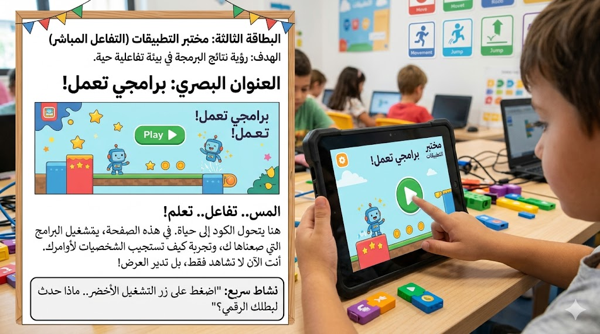

تحدي ترتيب الأوامر
رتب اللبنات بالشكل الصحيح ثم نفذ البرنامج.
التحديات البرمجية
بعد التعرف على المفاهيم وتجربة البرامج، ينتقل الطفل إلى التحديات البرمجية التي تتطلب منه التفكير قبل الضغط على زر التشغيل. هذه الأنشطة تنمي التركيز، ودقة الملاحظة، والقدرة على توقع النتيجة، ثم تعديل الحل عند الحاجة.
الهدف من التحديات ليس فقط الوصول إلى الإجابة، بل تدريب الطفل على المحاولة والتحسين والتصحيح، وهي من أهم المهارات التي تبني شخصية المبرمج الصغير.

رتب اللبنات بالشكل الصحيح ثم نفذ البرنامج.
اختر اللبنة الخطأ في البرنامج ثم استبدلها باللبنة المناسبة.
استخدم الحد الأدنى من الخطوات لتحريك الروبوت نحو النجمة.